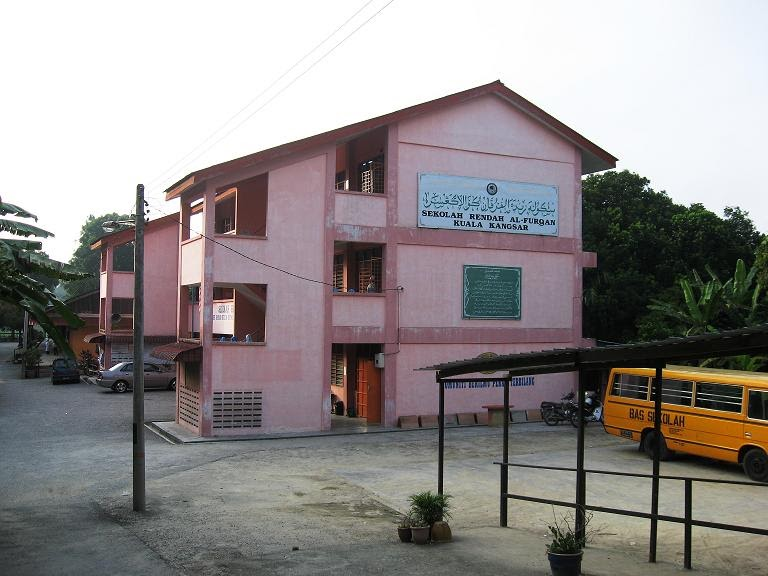
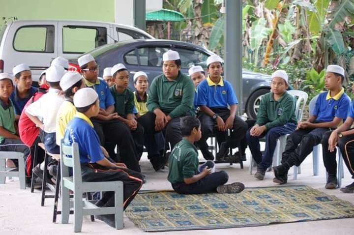

When I was seven years old, I started attending Sekolah Rendah al-Furqan in Kota Lama Kanan, Kuala Kangsar, Perak, where I studied until I was twelve. The school, which was surrounded by lush nature, played an important role in my childhood and provided many wonderful experiences. I walked to school every day, making lifelong friendships and playing traditional games like "sepak takraw" and "batu seremban." Our committed teachers instilled a passion for studying, bringing subjects like history to life. Festivals, particularly Hari Raya, were celebrated with a strong sense of belonging. As I prepared for the UPSR exams in my last year, the help of friends and teachers was helpful. I graduated from Sekolah Rendah al-Furqan with cherished memories, enduring connections, and a strong educational foundation.
Long after, in 2017, at the age of 13, I was sent to Sekolah Menengah Kebangsaan Bukit Merchu. This school was conveniently close to my house, making the daily journey much easier. Every morning, I'd get on my motorcycle and ride the short distance to school, feeling the cool morning air on my face. The ride became a treasured ritual, providing a few moments of solitude and thought before the hectic day began. Riding through the peaceful neighborhood streets, I frequently liked the tranquil surroundings and the sense of tranquility that came with the early hour. This little trek marked the beginning of each day at Bukit Merchu, setting the tone for the events and lessons that awaited me within.
In 2022, I began a new chapter by enrolling in UiTM in Kedah, leaving behind the comforts of home for the first time. Despite my early reservations, I was able to settle in and build supportive friendships with my classmates within a week. Having a high school friend at my side was helpful, but it was the friendly environment and camaraderie among friends that actually made me feel at ease. Overcoming the difficulties of adjusting to a new environment gave me a sense of accomplishment and freedom. As I continue my study at UiTM, I am eager to seize possibilities for growth and self-discovery, confident that with the help of friends and newfound resilience, I can accomplish anything.